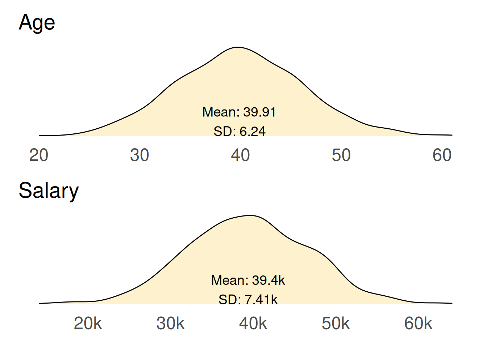

In the world of data analysis, missing values can feel like puzzle pieces that just won’t fit, leaving analysts frustrated and insights incomplete. But what if I told you that imputing these missing values could be the key to unlocking a treasure trove of insights? By skilfully filling in the gaps, we can enhance the integrity of our datasets and elevate the quality of our analyses.
This blog explores the importance of addressing missing data and how an effective imputation strategy can transform incomplete datasets into powerful tools for decision-making.
Imputing missing data with MICE
Recently, I encountered a challenge while working with a dataset that had approximately 3% missing values. The goal was to match sites that received an intervention with control sites using the {MatchIt} package. However, the package excluded records with missing data, which would have resulted in the loss of around 40 intervention sites.
Further investigation revealed the missingness was not at random, which meant that proceeding with a complete-case analysis would have introduced biases into the resulting analysis.
To address these issues, I turned to the Multiple Imputation by Chained Equations (MICE) algorithm, implemented in the {mice} package. The MICE algorithm offered a solution by imputing likely values for the missing data which resulted in reduced bias in the resulting analysis and increased accuracy of the matched sites.
What’s the problem with missing data?
When datasets contain gaps, whether due to non-response in surveys, data entry errors, or system malfunctions, the integrity of the analysis is compromised.
In my case, missing data presented two main challenges. First, the missingness prevented some of my intervention sites from being matched with control sites, which reduced the overall dataset size and excluded important information from my analysis. Second, the type of missingness in my data meant that excluding incomplete records introduced biases into the dataset.
Understanding the type of missingness in your dataset is essential for choosing the right approach to handle it.
Types of missingness
Missing data can be categorised into three types:
Missing Completely at Random (MCAR), where the missingness is entirely independent of both observed and unobserved data
Missing at Random (MAR), where the missingness is related to observed data but not the missing values themselves
Missing Not at Random (MNAR), where the missingness is related to the unobserved data.
These types are summarised in the below table along with strategies for handling them.
The missingness is completely unrelated to the data (no pattern).
Analyses remain unbiased as missingness does not systematically affect the data.
Remove rows with missing data, or simple imputation using, e.g. mean.
The gaps are related to observed variable/s (conditional).
Biases are introduced if missingness is not accounted for.
Can be addressed using imputation methods using observed data to predict missing values.
The gaps are related to observed variable/s and also to themselves.
Need to collect a sample of missing data to be sure.
Analysis is biased.
Sophisticated techniques can possibly fix.
Using techniques described in the Epidemiologists Handbook, I found that the missingness in my data was non-random, specifically either MAR or MNAR. Since I could not collect any of the missing values (as I was working with a nationally-produced dataset), I decided to treat my data as Missing at Random (MAR), which meant that biases could be introduced if I failed to account for the missingness in the data.
Handling missingness
Handling missingness can be approached through various techniques, each with its own strengths and weaknesses.
One common method is to delete rows containing missing data (i.e. complete-case analysis). This method is simple to do and is often a default method for statistical packages, however, it is only appropriate for situations where the data is missing completely at random (MCAR).
Another approach is imputation, where missing values are filled in based on observed data. Simple methods include the mean or median imputation, which replaces missing values with the average of the observed values. While straightforward, these methods can reduce variability in the dataset. More sophisticated techniques, such as regression imputation, use regression models to predict and fill in missing values based on other variables, providing potentially more accurate estimates, but introducing bias if the model is not well-specified.
For more advanced handling of missing data, multiple imputation creates several different imputed datasets and combines the results to account for uncertainty in the missing data. This approach offers more robust estimates and better reflects the variability in the data.
Techniques for handling missing data
Applied example
Now that we’ve covered the theory of missingness, its impact on analyses, and ways to deal with it, let’s put these techniques into practice using a fictional dataset.
We’ll create a sample dataset that simulates authentic relationships between age, gender and salary. This will provide the foundation for our experiment.
Next, we’ll intentionally introduce non-random missingness into the dataset to create a realistic scenario with incomplete data.
We’ll then fill in the missing data using four different imputation techniques.
Finally, we’ll compare the results from each imputation technique with the original dataset to evaluate their performance and see how well they work with this example dataset.
Create a complete dataset
First, lets create an example dataset consisting of UK salaries by age and gender in 2025. This data is loosely based on figures reported in a Forbes article and based on Office for National Statistics (ONS) data.
Our data will contain details for 1,000 people’s salary along with their age and gender:
Age will be independently generated using a poisson distribution using an average of 40 years,
Gender will be independently generated using a random sample from a list of either Male or Female.
Salary will be dependent on both age and gender such that there is an ‘n’ shaped distribution between age with the highest salary for those aged 40 to 49 years, and introduce a 7% gender pay gap between men and women.
Code
# decide the number of rows to createrows <-1000# Ensure reproducibilityset.seed(123)# Generate the datadf_complete <- tibble::tibble(# age and gender are independentage =rpois(n = rows, lambda =40),gender =sample(x =c('Male', 'Female'), size = rows, replace =TRUE),# generate salary based on age groupsalary_age = dplyr::case_when( age %in%18:21~rnorm(n = rows, mean =24000, sd =5000), age %in%22:29~rnorm(n = rows, mean =33000, sd =6000), age %in%30:39~rnorm(n = rows, mean =40000, sd =7000), age %in%40:49~rnorm(n = rows, mean =43000, sd =8000), age %in%50:59~rnorm(n = rows, mean =41000, sd =7000), age >59~rnorm(n = rows, mean =36000, sd =5000) ),# gender pay gap of 7% across all age rangessalary = dplyr::case_match( gender,'Female'~ salary_age *0.93,.default = salary_age ) |>round(digits =0) ) |> dplyr::select(-salary_age)# see a sampledf_complete |> dplyr::slice_head(n =10) |> gt::gt() |> gt::opt_stylize(style =5, add_row_striping =FALSE)
age
gender
salary
36
Male
34410
47
Male
41889
29
Male
31711
40
Female
18838
50
Male
30264
42
Female
33879
31
Male
29416
29
Female
17698
47
Female
44293
42
Female
50074
Here we see a sample of the 1,000 available in our Complete dataset. This data has built-in relationships between salary and age, and also between salary and gender.
We can visualise the data for age and salary as density distributions. Below are two function definitions, one for generating a density plot for a given variable and another for comparing age and salary distributions between our complete dataset and another dataset.
Code
#' Function to create a density plot#' #' @param df Tibble of data#' @param x_val Variable to plot on the x axis#' @param x_label String - Name of the variable in the x axis#' @param summary String - Summary stats (mean and sd) for `x_val`#' @param complete Boolean (default = FALSE) - Is this complete data?plot_density <-function(df, x_val, x_label, summary, complete =FALSE) {# define our fill colour:# reference (complete) data is coloured orange,# comparison data is coloured blueif (complete) { fill_colour <-adjustcolor(col ="#f9bf07",alpha.f =0.2 ) } else { fill_colour <-adjustcolor(col ="#5881c1",alpha.f =0.2 ) }# produce the plot p <- df |> ggplot2::ggplot(ggplot2::aes(x = {{x_val}})) + ggplot2::geom_density(fill = fill_colour,outline.type ="upper" ) + ggplot2::labs(title = x_label) + ggplot2::annotate(geom ='text',label = summary,size =14/ggplot2::.pt,x =mean(df |> dplyr::pull({{x_val}}), na.rm =TRUE),y =0,hjust =0.5,vjust =0 ) + ggplot2::theme_minimal(base_size =18) + ggplot2::theme(# titlesplot.title = ggplot2::element_text(size =22),# axesaxis.ticks = ggplot2::element_blank(),axis.line = ggplot2::element_blank(),axis.title = ggplot2::element_blank(),axis.text.y = ggplot2::element_blank(),axis.text.x = ggplot2::element_text(size =18),# grid linespanel.grid = ggplot2::element_blank(),panel.border = ggplot2::element_blank(),# backgroundplot.background = ggplot2::element_blank() )# add thousands suffix to salary outputsif (x_label =="Salary") { p <- p + ggplot2::scale_x_continuous(labels = scales::label_number(suffix ='k', scale =1e-3) ) }# return the plotreturn(p)}#' Function to compare density distributions#'#' @param df_complete Tibble - the 'complete' dataset#' @param df Tibble - the comparison dataset containing missing or imputed values#'#' @returns ggplot2 objectcompare_distributions <-function(df_complete, df =NA) {# summary stats for age and salary complete_summary_age = glue::glue("Mean: {round(mean(df_complete$age, na.rm = TRUE), digits = 2)}\n","SD: {round(sd(df_complete$age, na.rm = TRUE), digits = 2)}" ) complete_summary_salary = glue::glue("Mean: {round(mean(df_complete$salary, na.rm = TRUE)/1000, digits = 2)}k\n","SD: {round(sd(df_complete$salary, na.rm = TRUE)/1000, digits = 2)}k" )# get the 'complete' density plots complete_age <-plot_density(df = df_complete,x_val = age,x_label ="Age",summary = complete_summary_age,complete =TRUE ) complete_salary <-plot_density(df = df_complete,x_val = salary,x_label ="Salary",summary = complete_summary_salary,complete =TRUE )# check whether a comparison dataset has been providedif (!missing(df)) {# summary stats for age and salary input_summary_age = glue::glue("Mean: {round(mean(df$age, na.rm = TRUE), digits = 2)}\n","SD: {round(sd(df$age, na.rm = TRUE), digits = 2)}" ) input_summary_salary = glue::glue("Mean: {round(mean(df$salary, na.rm = TRUE)/1000, digits = 2)}k\n","SD: {round(sd(df$salary, na.rm = TRUE)/1000, digits = 2)}k" )# get the comparison density plots comparison_age <-plot_density(df = df,x_val = age,x_label ="Age",summary = input_summary_age,complete =FALSE ) comparison_salary <-plot_density(df = df,x_val = salary,x_label ="Salary",summary = input_summary_salary,complete =FALSE )# combine the charts to compare plots <- patchwork::wrap_plots( complete_age, comparison_age, complete_salary, comparison_salary,nrow =2 ) } else {# there is only the complete dataset included, so show that plots <- patchwork::wrap_plots( complete_age, complete_salary,ncol =1 ) }# return the plotsreturn(plots)}
We’ll see examples comparing datasets later, but for now lets examine how age and salary are distributed among our pristine complete dataset.
Code
compare_distributions(df_complete = df_complete)

The average (mean) age of people in our dataset is 39.91 years with a standard deviation (SD) of 6.24 years. This indicates that most individuals are clustered around this average age, but there is some variability, with ages ranging from 18 to 65 years.
The average (mean) salary is £39,400 with a SD of £7,410. There is a notable spread in salaries, influenced by factors such as age and gender.
While we have established these averages, it’s important to note that neither the age nor salary distribution is perfectly smooth. Several factors contribute to the irregularities observed in the density plots:
Randomness in data generation: The use of a Poisson distribution for age generation introduces inherent randomness. This randomness can lead to fluctuations in the density curve, resulting in peaks and troughs that may not represent a perfectly normal distribution.
Relationships between salary and gender: The salary calculations were influenced by both age and gender, creating an ‘n’ shaped distribution where salaries peak for individuals aged 40 to 49 years. The 7% gender pay gap further complicates the distribution, as it introduces additional variability based on gender.
These plots represent the complete dataset, showcasing all the complexities we introduced during the data generation process. In many ways, they illustrate an idealised version of data - one that is fully complete, with no missing values and clear relationships between variables. This is often referred to as the “unknowable truth” of the data, as it reflects a perfect scenario that analysts rarely experience in practice.
Introducing missingness in our dataset
We will now introduce missingness into our complete dataset, creating a new dataset that reflects a more realistic situation. Specifically, we will implement a Missing At Random (MAR) mechanism, where the missingness is conditionally related to other observed variables.
We will remove 100 values (10% of the dataset) from each variable based on the following criteria:
Age missingness: we will randomly select 100 individuals whose salary is above £45,000 and set their age to missing.
Salary missingness: we will randomly select 100 individuals whose age is below 40 years and set their salary to missing.
Gender missingness: we will randomly select 100 individuals to have their gender value set to missing, independent of other variables.
Code
# take a copy of the complete datadf_missing <- df_completeseed <-100# age - where salary > 45000set.seed(seed) # for reproducibilitydf_missing$age[sample(which(df_complete$salary >45000), size =100, replace =FALSE)] <-NA# salary - 90 where age > 45, 10 from restset.seed(seed) # for reproducibilitydf_missing$salary[sample(which(df_complete$age <40), size =100, replace =FALSE)] <-NA# gender - 100 randomlyset.seed(seed) # for reproducibilitydf_missing$gender[sample(1:rows, size =100, replace =FALSE)] <-NA# see a samplemissing_cell_style <- gt::cell_fill(color ="#ec6555")df_missing |> dplyr::slice_head(n =10) |> gt::gt() |> gt::opt_stylize(style =5, add_row_striping =FALSE) |># highlight cells with missing values gt::tab_style(style = missing_cell_style,locations = gt::cells_body(columns = age, rows =is.na(age)) ) |> gt::tab_style(style = missing_cell_style,locations = gt::cells_body(columns = gender, rows =is.na(gender)) ) |> gt::tab_style(style = missing_cell_style,locations = gt::cells_body(columns = salary, rows =is.na(salary)) )
age
gender
salary
36
Male
34410
47
Male
41889
29
Male
31711
40
Female
18838
50
Male
30264
42
Female
33879
31
NA
29416
29
Female
NA
47
Female
44293
42
Female
50074
Here we can see a sample from our dataset with missingness introduced. Two missing values are shown here, highlighted in red.
We will now explore techniques handling this missingness.
Technique 1 - complete-case analysis
The complete-case analysis approach, also known as listwise deletion, involves removing any cases that have missing values. This means only observations with complete data for age, gender and salary are used in the analysis.
Code
# remove records containing missing valuesdf_removal <- df_missing |>na.omit()# see the resultcompare_distributions(df_complete = df_complete, df = df_removal)
Here we see the original dataset (left, yellow) compared with the newly created dataset (right, blue) produced by omitting records where they contain one or more missing values.
This approach has a significant impact on the shape of the distributions, especially for salary. In the dataset with missing values, there is a noticeable gap or ‘chunk’ missing from the right-hand side of the salary distribution. Additionally, the salary standard deviation decreases, indicating there is less variability in the imputed dataset than we know existed in the original complete data.
Technique 2 - substituting averages
This technique involves replacing missing values with the mean of the observed values for age and salary.
This technique produces unusual distributions, characterised by noticeable spikes in the central region in the newly created data, (right, blue), that result from substituting all missing values with the average. While this method does not significantly alter the mean values, it does lead to much smaller standard deviations for both age and salary. This reduction indicates there is considerably less variability in the imputed data compared to the original dataset.
Technique 3 - linear regression
In this technique the missing values are imputed based on a linear regression using the relationships with the other variable. Specifically, salary is imputed based on its relationship with age, and age is imputed based on its relationship with salary.
Code
# model age and salarymodel_age <-glm(data = df_missing |>na.omit(),formula = age ~ salary,na.action ="na.exclude")model_salary <-glm(data = df_missing |>na.omit(),formula = salary ~ age,na.action ="na.exclude")# fill in details using regressiondf_regression <- df_missing |> dplyr::mutate(age_pred =predict(object = model_age,newdata =data.frame(gender = df_average$gender, salary = df_average$salary) ) |>round(digits =0),salary_pred =predict(object = model_salary,newdata =data.frame(gender = df_average$gender, age = df_average$age) ) |>round(digits =0),age = dplyr::coalesce(age, age_pred),salary = dplyr::coalesce(salary, salary_pred) ) |> dplyr::select(-c(age_pred, salary_pred))# see the resultcompare_distributions(df_complete = df_complete, df = df_regression)
This technique also produces unusual distributions, characterised by noticeable spikes in the new dataset (right, blue). Both the imputed age and imputed salary exhibit much smaller standard deviations compared to the original dataset, indicating reduced variability in the imputed data.
Technique 4 - Multivariate Imputation by Chained Equations (MICE)
The MICE algorithm works by iteratively imputing missing values using a series of regression models. It initialises missing values with a starting estimate, then for each variable with missing values, creates a regression model using the observed values and other variables. The regression model is used to predict the missing values, and this process is repeated for each variable with missing values, updating the estimates at each iteration. This iterative process is repeated multiple times, creating multiple imputed datasets, which are then combined to obtain a single, final estimate.
Code
# let {mice} suggest an imputation method for each variableinit <- mice::mice(df_missing, maxit =0)# calculate the imputed valuesimputed <- mice::mice(data = df_missing, # data to be usedm =10, # number of multiple imputations (dflt = 5)method = init$method, # matching method - will go with defaultseed =123, # for reproducibilitymaxit =10, # 10 iterations (default = 5)printFlag =FALSE# don't print history to the console)# complete the datadf_mice <- mice::complete(imputed)# see the resultcompare_distributions(df_complete = df_complete, df = df_mice)
Here we see the original dataset (left, yellow) compared with the newly created dataset (right, blue) produced by multiple imputation using the MICE algorithm.
While this approach is not without its imperfections, it provides significantly better estimates for the missing data compared to previous techniques. As a result, the density distributions of the imputed dataset resemble those of the original dataset, indicating a more accurate representation of the underlying data.
Technique review
We have explored four techniques for handling missing data: complete-case analysis, mean imputation, linear regression and multiple imputation using the MICE algorithm. Now, let’s consolidate our findings to see how these techniques compare in terms of their effectiveness.
In the tables below, we compile the mean and standard deviation (SD) values for age and salary from each technique, along with the absolute differences from the original dataset’s mean and standard deviations. This comparison highlights the performance of each method in imputing missing data.
MICE performs best at imputing age
The MICE algorithm performed the best at imputing missing age data, providing mean and standard deviation values that are the closest overall match to the original dataset. While it is not perfect, it significantly improves the accuracy of the imputed values.
Both the mean imputation and linear regression techniques performed reasonably well in estimating the average value of age. However, they resulted in significantly different standard deviations compared to the original dataset. This discrepancy indicates that the resulting distributions were altered, as observed in our earlier plot comparisons.
Code
# list the data showing different imputation approachesdata <- tibble::tribble(~df, ~df_name, df_complete, "Original", df_removal, "Complete-case", df_average, "Average", df_regression, "Regression", df_mice, "MICE" )# summarise the results to a single dfdf_summary_test <- purrr::map2_dfr(.x = data$df,.y = data$df_name,.f = \(.x, .y) { .x |> dplyr::summarise(set = .y,age_mean =mean(age),age_sd =sd(age),salary_mean =mean(salary),salary_sd =sd(salary) ) } ) |># split age and salary to separate rows tidyr::pivot_longer(cols =-set,names_to =c("measure", ".value"),names_pattern ="(.*)_(.*)" ) |># convert salary to thousands to put on the same scale as age dplyr::mutate(mean = dplyr::case_when( measure =="salary"~ mean *1e-3,.default = mean ),sd = dplyr::case_when( measure =="salary"~ sd *1e-3,.default = sd ) )# define a function to display results in a formatted table#' Produce a summary table of results for a given measure#'#' @param df Tibble containing summary results from each imputation approach#' @param .measure String identifying the measure to summarise (either 'age' or 'salary')#'#' @returns gt tableimputation_summary_table <-function(df, .measure =c("age", "salary")) {# get the original data as reference df_original <- df |> dplyr::filter(measure == .measure, set =="Original") |> dplyr::select(mean, sd)# filter the data for the specified measure and work out differences df_summary <- df |> dplyr::filter(measure == .measure) |> dplyr::mutate(# add the 'original' mean and sd values to each rowmean_original = df_original$mean,sd_original = df_original$sd,# work out differences between the imputation and originalmean_difference = dplyr::case_when( set =="Original"~NA, # leave original blank.default =abs(mean - mean_original) ),sd_difference = dplyr::case_when( set =="Original"~NA, # leave original blank.default =abs(sd - sd_original) ),# determine which approach gives the overall lowest differenceoverall_difference = mean_difference + sd_difference,trophy = dplyr::case_when( overall_difference ==min(overall_difference, na.rm =TRUE) ~"🏆" ) )# display as a formatted table tab <- df_summary |> gt::gt() |> gt::tab_options(quarto.disable_processing =TRUE) |> gt::fmt_number(decimals =2) |> gt::cols_hide(columns =c("measure", "mean_original", "sd_original" )) |> gt::sub_missing(missing_text ="") |> gt::data_color(columns =c("mean_difference", "sd_difference", "overall_difference"),palette =c("#5881c1", "#dff9fb"),na_color ="white" ) |> gt::cols_label(set ="Set",mean ="Mean",sd ="SD",mean_difference ="Mean",sd_difference ="SD",overall_difference ="Overall",trophy ="Trophy" ) |> gt::tab_spanner(columns =c(mean_difference, sd_difference, overall_difference),label ="Difference from 'Original'" ) |> gt::cols_align(columns = trophy, align ="center")return(tab)}# summarise the approaches for 'age'imputation_summary_table(df = df_summary_test, .measure ="age")
Set
Mean
SD
Difference from 'Original'
Trophy
Mean
SD
Overall
Original
39.91
6.24
Complete-case
40.20
6.36
0.30
0.12
0.42
Average
39.76
5.95
0.15
0.29
0.43
Regression
39.93
5.99
0.02
0.25
0.27
MICE
39.86
6.31
0.05
0.08
0.13
🏆
MICE performs best at imputing salary
The MICE algorithm also performed best at imputing missing salary data, providing mean and standard deviation values that are the closest overall match to the original dataset.
Code
# summarise the approaches for 'salary'imputation_summary_table(df = df_summary_test, .measure ="salary")
Set
Mean
SD
Difference from 'Original'
Trophy
Mean
SD
Overall
Original
39.40
7.41
Complete-case
38.42
7.06
0.98
0.35
1.33
Average
39.54
7.06
0.14
0.35
0.49
Regression
39.33
7.09
0.07
0.32
0.39
MICE
39.48
7.38
0.09
0.03
0.12
🏆
It is interesting that complete-case analysis performed poorly on this dataset, leading to distorted average values for both age and salary. This is concerning, given that complete-case analysis is often the default method used by many statistical packages to handle missing data. This highlights the importance of reviewing and potentially adjusting for missing data to ensure accurate results.
Summary
Missing data can significantly impact the integrity of your findings, leading to skewed results and misleading conclusions. Understanding how to manage missing values is essential for drawing accurate insights.
We identified three types of missingness to consider:
Missing Completely At Random (MCAR): missingness is random and unrelated to observed or unobserved data.
Missing At Random (MAR): missingness is related to observed data, but not the missing data itself.
Missing Not At Random (MNAR): missingness is related to the unobserved data itself.
To explore techniques for handling missingness we created a synthetic dataset of 1,000 individuals with age, gender and salary, using authentic relationships. We introduced MAR missingness, simulating everyday scenarios.
We used four methods for handling missing data:
Complete-case analysis
Mean imputation
Linear regression
Multiple imputation using the MICE algorithm
The MICE algorithm emerged as the most accurate, closely mirroring the original dataset’s characteristics. Mean imputation and linear regression provided decent average estimates but distorted variability, leading to altered distributions.
This example serves as a powerful reminder of the importance of choosing the right approach for missing data. So, the next time you encounter missing values, remember: how you handle them can shape the story your data tells.
![]()